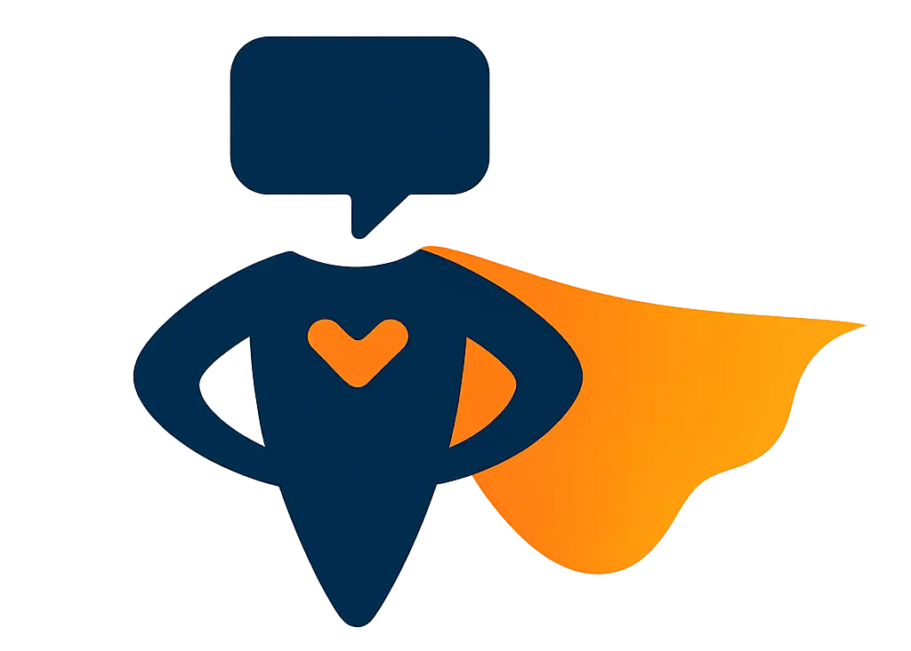
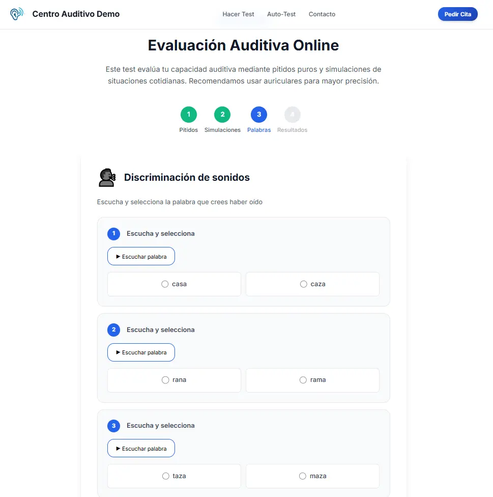
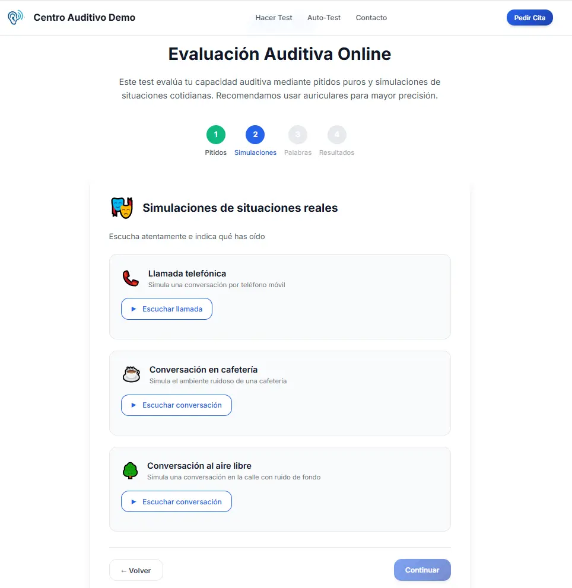

Web del centro
Una sección propia dentro de tu web, con tu logo, nombre e imagen.

Hear-OCapta pacientes potenciales para tu centro
Una experiencia sonora que convierte tu web, tu tablet y tus campañas en nuevas oportunidades para tu centro. Y, si quieres, te ayuda a filtrar normoyentes antes de reservar una prueba presencial.
4 frecuencias, simulaciones de escucha y logoaudiometría.
El objetivo principal
La prueba convierte una visita, una publicación o una campaña en una oportunidad real de contacto con tu centro. El filtrado de normoyentes queda como un valor añadido, para usarlo cuando te interese.
Una sección propia dentro de tu web, con tu logo, nombre e imagen.
Una experiencia sencilla con tablet y cascos. Ideal para centros óptico-auditivos.
Lleva tus publicaciones a una acción concreta: “Pon a prueba tu audición”.
Reactiva contactos con una invitación diferente y fácil de entender.
Un destino claro para tus campañas de captación.
Una prueba sonora de verdad
La persona no solo responde preguntas: escucha, participa y termina dando un primer paso con tu centro.
500 Hz (graves), 1.000 Hz (medios), 2.000 Hz (agudos) y 4.000 Hz (muy agudos).
Simulaciones de habla en entornos diversos: conversación telefónica, cafetería, aire libre y viento.
Una última prueba de discriminación con 8 pares de palabras: casa/caza, rana/rama, taza/maza...
El valor añadido
La captación es el objetivo principal. Como extra, la prueba puede ayudarte a orientar mejor los contactos y reservar la atención presencial para los casos que más lo necesitan.
La prueba es orientativa y no sustituye una evaluación auditiva profesional.


Opciones adicionales
La Prueba Auditiva Online funciona por sí sola. Si quieres ir más allá, podemos añadir estas opciones bajo presupuesto:
Ver Marketing StudioPrecio
Empieza con una herramienta concreta para captar pacientes y ponla a trabajar con la imagen de tu centro.
Oferta de lanzamiento · ahorra un 25%
Precio original520 € + IVA
Oportunidad de lanzamiento · pago único
Si la integramos nosotros
Pago único · total con landing: 590 € + IVA
Te entregamos un único archivo para que tu webmaster pueda integrarlo fácilmente. Si lo prefieres, lo hacemos nosotros: creamos el enlace en el menú y una sección CTA en la página principal.
Opcional
18 € + IVA / mes con pago anual
Mantenemos la landing revisada y cuidada: actualizaciones básicas, revisión del formulario y comprobaciones generales para que la captación siga funcionando correctamente.
Hosting y dominio no incluidos. Automatizaciones y Marketing Studio se pueden añadir según el alcance elegido.
Preguntas habituales
En la web de tu centro, en una tablet dentro del establecimiento, en redes sociales, en campañas de email o como destino de publicidad online.
Es una prueba sonora online: trabaja 4 frecuencias, simula espacios sonoros y añade pruebas de logoaudiometría. No es un simple formulario de cinco preguntas.
Como valor añadido, ofrece una primera orientación para priorizar las citas presenciales cuando realmente aportan valor. No sustituye una evaluación profesional.
Sí. El contacto captado se envía al correo del centro para que el equipo pueda continuar la conversación.
Sí. Se utiliza el logo, el nombre, los mensajes y la forma de contacto del centro.
Hear-O · Automatizaciones e IA para centros auditivos
Pon una experiencia sonora de Hear-O en tu web, tu centro o tus campañas.